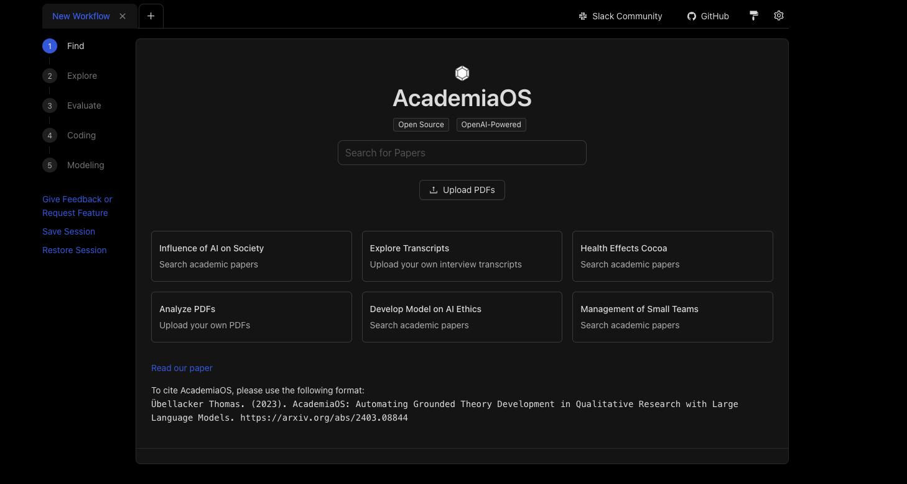
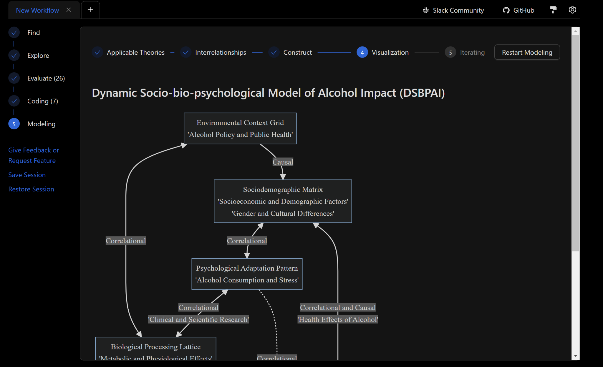
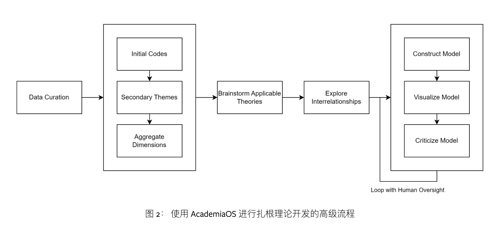

扎根理论（Grounded Theory, GT）是由社会学家 Barney Glaser 和 Anselm Strauss 在 1967 年提出的定性研究方法。它强调从数据中产生概念，并通过不断比较数据中的实例来发展这些概念，最终形成一个理论框架。研究过程包括开放式编码、轴心编码和选择性编码等阶段，这些阶段帮助研究者逐步提炼数据并构建理论。
以访谈类数据为例， 一个研究一般有几十份访谈， 转录和编码一次典型的访谈需要几个小时，而这仅仅是一个开始，研究人员试图理解原始数据并将其转化为有用的东西，以获得洞察力和知识，并发展出可以描述模式和现象的理论。受限于研究者的经济、金钱的约束， 只能在有限的数据量基础上，利用研究者的智慧进行挖掘和洞察。从认识论角度， 扎根理论是一种归纳法， 可供归纳的一手原始数据越多， 后期定性研究中的理论开发就会越扎实， 也更容易出现新的、有趣的、有重量的发现。随着chatGPT这类大语言模型LLM的出现， 扎根理论的约束条件有望被打破， 我们可以借助大语言模型，对更大体量的一手数据，进行更高效的进行定性研究。
大邓之前进行过LLM的实验， 确信稍微更改下Prompt即可大幅度提高编码阶段的效率。LLM与扎根的结合，是顺理成章的。
以下内容摘自这篇arXiv2024， 并进行了翻译。
Übellacker, Thomas. “AcademiaOS: Automating Grounded Theory Development in Qualitative Research with Large Language Models.” arXiv preprint arXiv:2403.08844 (2024).
摘要: AcademiaOS 是首次尝试使用大型语言模型自动开发定性研究中的扎根理论。利用最新大型语言模型的语言理解、生成和推理能力，AcademiaOS 对精选的定性原始数据（如访谈记录）进行编码，并开发主题和维度以进一步开发扎根理论模型，从而提供新颖的见解。一项用户研究（n=19）表明，该系统在学术界得到了认可，并展现出在定性研究中增强人类能力的潜力。AcademiaOS 已开源，供其他人在此基础上构建并适应他们的用例。

一、扎根理论
研究人员通常遵循既定的编码实践来管理大量非结构化文本源。编码通常涉及系统地生成代码本（Weston 等人，（2001) ) 来编码转录。另一种流行的方法是 「Gioia 方法」（Gioia 等人，（2013) )，研究人员直接从源文档中提取新兴模式和概念，然后按照以下步骤进行汇总和解释。然后，这些开发的代码可以进一步用于定性数据分析和理论开发。 从数据中开发理论模型的概念称为扎根理论开发（Chun Tie 等人，（2019) )。
1.1 Gioa的扎根理论开发
Gioia 等人，（2013)定义了一种透明的流程，用于分析定性数据以从访谈中开发理论模型。他们的流程旨在让研究人员从原始定性数据转向越来越抽象的概念类别，从初始编码开始，研究人员对数据中的相关概念进行编码和下划线，从而得到一个广泛的一阶概念列表，这些概念仍然以源文档的语言陈述。然后，他们使用这些一阶概念来生成一个更抽象的二阶主题列表，这些主题试图用更学术的语言来概括一阶代码的概念。最后，他们将二阶主题聚合成更抽象的“聚合维度”。然后，这些维度被用作开发理论的基础。Gioia等人，（2013)提到了理解这些概念之间的动态关系的重要性，但尚未提供获得这些关系的具体方法。他们认为，通过遵循这种“Gioia 方法”，研究人员已经足够熟悉基础文献，可以理解这些关系。
1.2 Eisenhardt的扎根理论开发
扎根理论发展的另一种方法是艾森哈特（1989)方法，侧重于从案例研究中构建模型。这种方法从案例内分析开始，以熟悉数据并生成初步理论。从那里开始一个高度迭代的过程，Eisenhardt，（1989)称之为“塑造假设”，反复比较数据和开发的结构，并验证开发的结构之间出现的关系是否与数据中的证据相符。他们将案例研究视为实验的复制，要么加强假设，要么削弱假设。
1.3 自动化
基于现有文献，很明显，Gioia 等人（2013)和Eisenhardt (1989)为扎根理论的发展提供了一个框架。定性研究任务（包括数据收集和分析）既耗时又昂贵，并且限制了单个研究团队可研究的经验数据。 Kindsiko和 Poltimäe，（2019）支持这一观点，指出实证研究中的样本量取决于资金和研究团队的规模。然而，Bowen（2008)概述了样本量如何影响研究有效性，并建议通过饱和度来限制样本量，即当更多访谈、案例研究或其他样本无法增加重要的新信息时，停止添加这些样本。现在，我们如何通过增加样本量来增加研究严谨性，同时保持较低的人工投入？答案可能在计算自动化中找到。
在定量研究中，数据准备和理论开发的自动化是一个被积极研究的课题，其名称包括 “数据挖掘”或“机器学习”，计算机程序从观察中学习以开发数学模型，从而使它们能够以实证主义范式估计未来的情况。然而，定性研究问题伴随着结构化程度较低或可编码性较差的信息，并且依赖于研究人员的知识和解释。同时，随着大型语言模型 (LLM) 的兴起，我们可以使用技术平台，将对文本数据的计算理解和推理范式转变为接近人类的水平，并结合广泛的一般知识。这个新技术平台提供了一个大规模模拟明确定义的研究过程的机会。对于单个研究人员来说，编写 100 份访谈记录之类的任务非常耗时。假设通过适当的设置，LLM 可以在几分钟内并行处理所有记录。组织理论领域的研究人员可能会考虑使用两三个案例研究来开发理论模型。当在案例研究中寻找实证证据是一个自动化、可并行的过程时，使用 20 - 30 个不同案例研究的障碍就会大大减少，从而为更多具有统计相关性的定性研究提供机会。
因此，利用 LLM 实现定性研究过程部分自动化的潜力值得探索。本文探讨了以下研究问题：“如何有效地设计和实施基础开源平台，以利用大型语言模型来自动化扎根理论开发？”为此， AcademiaOS被提出并实施为一个开源平台，用于自动化或增强扎根理论开发任务，例如编码、维度聚合和理论开发。AcademiaOS 为科学界提供了一种进行定性研究的新方法，该方法透明、可访问且可扩展（通过其开源特性），并且通过同时并行分析多个定性来源的成本效益来提供更广泛的证据。该系统可能会对社会科学产生深远影响，特别是在组织理论领域，但也会对定性数据相关的其他学科产生深远影响。

二、早期研究
已经有人尝试过自动化定性分析。Berente等人，（2019)致力于开发一种计算密集型扎根理论发展的理论过程，提出了一种理论计算方法，以自动化扎根理论发展的以下四个步骤：（1）采样和数据收集，（2）同步分析，（3）词汇框架，（4）使用基于人工智能的工具进行历时分析。他们将计算过程描述为围绕预定义但动态的词汇展开，而不是同步“编码”新兴概念。他们建议使用分类法来挖掘概念。
马拉特和富山，（2018)讨论了基于预定义的人工注释代码本自动对访谈进行编码的可能性。Lennon等人也实施了类似的方法（2021)，根据他们自己的分析，其准确度达到了人类水平。Rietz和 Maedche，(2021)提出了一种半自动化监督机器学习解决方案，该解决方案从人类注释者那里学习编码规则并将其应用于更广泛的数据集。此外，上述研究所采用的机器学习算法并未考虑到LLM的出现。 商业平台ATLAS.ti（2023)于 2023 年初宣布了其自动编码功能的测试版本，将定性文献分成段落，并使用 OpenAI 的 LLM 逐一进行编码。其他商业平台（如 elicit.org）也纷纷出现，主要使用 LLM 来自动化文献审查流程。不过，研究人员还需要更多地了解研究人员如何在这些平台上使用这些新的 AI 功能。此外，这些应用程序仅自动化了定性研究过程的一小部分，尚未深入到自动化扎根理论开发领域。这引出了一个问题：扎根理论开发是否可以通过 LLM 实现自动化。
三、大语言模型
大型语言模型 (LLM) 是一种基于转换器模型的新技术平台，使用自我监督在大型数据集上进行预训练(做完形填空题)，这一过程可以理解为机器将语料中任意位置的单词盖住，让机器预测盖住的单词。通过这样的训练， 在数十亿个参数中编码一般和可转移的知识（Roberts 等人，（2020) ）。这些预先训练的基础模型通常会进行微调以遵循指令（Ouyang 等人，（2022) )，返回结构化输出，或具有对话性（如 ChatGPT 所示）。虽然 BERT 等较旧的模型通常被视为 LLM，但在本文中，该术语专门用于性能与 GPT-3 基础模型相似或更好的模型。随着 2022 年底 ChatGPT 的发布，LLM 已得到普及和大规模采用。它们已被应用于整个行业的流程自动化（Wulf 和 Meierhofer，（2023) , 第4页)。
与 LLM 的推理交互通常包括自然语言 提示Promp（输入）和 完成Completion（响应）。在本文使用的 OpenAI 对话模型（GPT-3.5 及更新版本）中，推理提示可能包含多个 Message消息”：设置框架的通用系统消息以及用户和助手消息的历史记录（请参阅附录 1-11 中的示例）。
无需进行微调，LLM 就能够从推理提示中的信息中学习和概括（Brown 等人，（2020) )。一次性或少量学习是指在提示中传递样本，而零次学习是指不提供样本，但让模型完成明确的指令。这种推理与常见的特定于任务的微调形成对比，通常称为“情境学习(in-context learning)”（Dong et al.，（2022) )。
尽管经过了预先训练，LLM 在其参数中存储了大量隐性知识，但这些知识的深度和时效性仍然有限，需要昂贵的训练才能更新。因此，使用信息检索系统, 通常称为“检索增强生成”（Retrieval-Augmented Generation, RAG）的架构来增强 LLM 推理已被证明可以减少幻觉并提高事实性和可解释性（Lewis 等人，（2020) )。作为通用模型，LLM 可以测量两个文本字符串之间的语义相似度。它们的相似度可以通过在其 LLM 内部向量表示上使用余弦相似度来高效地计算。RAG 使用这种直接的信息检索方式来连接检索到的相关文本以进行上下文学习（Lewis 等人，（2020) )。通过从原始输入文档中检索信息来增强 LLM 推理可能有助于实现理论开发的自动化。
四、方法
为了探索目前使用 LLM 实现扎根理论开发自动化的可能性，本文提出、开发并测试了一款通过人工监督协调 LLM 推理的软件。 AcademiaOS 是一个供定性研究人员自动化扎根理论开发的平台。 该平台引导用户完成预定义的流程，虽然大多数数据分析和理论开发部分都是自动化的，但用户拥有监督和控制权。为了确保用户隐私和高可维护性，让未来的潜在开发人员和开源贡献者不必担心前端后端交互，大多数计算都在浏览器中本地执行，直接使用外部 API（例如 OpenAI 开发人员平台）进行 LLM 推理。

五、使用者评价
已开展一项探索性定性调查，以评估用户与 AcademiaOS 的互动情况并指导未来的开发。通过便利抽样选择了具有定性研究背景的研究人员、专业人士和学生进行此次评估。参与者 (n=19) 是根据他们与平台的目标用户群的相关性而精心挑选的，因此被认为可以为评估 AcademiaOS 提供最具信息性和相关性的数据，并向他们提供了 Qualtrics 平台上的一项调查的链接。
参与者被要求反思他们当前的定性研究方法。他们报告使用了诸如访谈、观察、调查和小组等主要来源以及诸如案例研究、报告、荟萃分析、历史数据、报告和专家意见等次要数据来源（附录 13）。
调查的第二部分旨在了解参与者如何看待平台的初始交互和功能探索。参与者普遍认为该平台“有点容易”学习，但存在一些差异（见附录 18）
研究参与者普遍对编码过程表达出“有些”满意、“非常”满意，只有一个“非常不满意”的异常值（见附录 27）
当被问及 AcademiaOS 是否会影响他们的定性研究过程时，大多数参与者回答“可能”到“肯定”（附录 35），并提到了加快他们的研究过程（“快得多”、“它将加快研究速度”、“它将使编码和理论生成更快”）、充当灵感工具（“多次草稿迭代以启发/简化手动过程”、“我会用它来快速制作理论原型 […]”、“[…] 比较并可能找到我以前错过的东西。”）和作为一般的研究支持（“它将敦促许多科学家提高他们的吞吐量 […] 潜力以减轻人类的信息检索和保留”、“[…] 它将帮助我更容易地链接概念”、“让我更容易地进行研究，特别是在我无法集中注意力的时间”）（见附录 36）
| 方面 | 主要发现 | 隐含/担忧 |
|---|---|---|
| 当前研究方法 | 使用多种一手资料和次要资料来源；采用各种数据收集和分析方法，包括 NLP 技术。 | 不断发展融合定性和定量元素的研究方法；需要先进的分析工具。 |
| 研究中的人工智能工具 | 使用 ChatGPT、PyTorch 等多种 AI 工具来完成头脑风暴和编码等任务；担心可靠性。 | 人工智能在研究中的重要性，以及对人工智能工具的准确性和可靠性的需求。 |
| 初次互动/探索 | 易用性参差不齐；改进 UI 和指导的建议；编码和理论开发功能的挑战。 | 需要更直观的用户界面和全面的用户指导。 |
| 可用性和满意度 | 对编码过程总体满意；多语言文档和内容变化带来的挑战。 | 改进文档检索和多样化内容编码的重要性。 |
| 理论发展 | 对理论发展感到满意，但担心研究问题的复杂性和相关性。 | 需要更简单、更有针对性的理论发展模型。 |
| 对研究的影响 | 对研究效率产生积极影响；对伦理影响、质量、偏见以及人工智能取代人类的担忧。 | 在人工智能实用性和道德考虑之间取得平衡；解决质量和偏见问题。 |
| 未来使用和建议 | 对 AcademiaOS 的未来感到兴奋；愿意继续使用和推荐该平台。 | 该平台有被更广泛采用和持续发展的潜力。 |
六、局限性
虽然AcademiaOS引入了一种自动化的扎根理论开发的新方法，但这项工作还存在几个局限性。
首先，由于依赖大型语言模型（LLM），该系统继承了一些LLM的常见的局限性。Chen等人（2023）发现LLM在事实性问题的回答准确性方面比常见的信息检索系统表现较差，尤其是在少量示例的上下文中。不过，理论开发用例本身并不是一个要求极高准确度或信息量的知识生成任务，只要这些指标与连贯性、相关性、有用性和有效性一同具备即可，而这些都是Chen等人（2023）指出LLM表现良好的方面。由于LLM的输出开放性，有时会出现超出预期范围的完成情况，例如不正确的MermaidJS可视化脚本语法或错误的JSON字段。这只能通过编写更严格的提示来部分缓解（比如指定输出格式或给出具体示例）。Kocoń等人（2023）发现最先进的AI解决方案通常在常见的自然语言处理任务上胜过当前的LLM，这意味着在AcademiaOS使用LLM的某些功能（例如编码过程）上，专门化的模型也能表现得更好。但不同技术之间的基准比较不在本研究范围内。像GPT-4这样的模型存在的固有偏见（Bubeck等人，2023，第86-89页）可能对敏感话题构成挑战，例如处理受保护的属性。然而，鉴于扎根理论发展的理念是将任何假设都建立在精心挑选的数据源上，无论是人类还是机器推理，都几乎没有空间进行带有偏见的解读。
其次，缺乏研究者身临其境的场景信息， 而这些信息能使他们能够更深入地沉浸在研究环境中。LLM只能部分地通过其广泛的通用知识来弥补这一点，这可能导致所开发理论中的误解或过度泛化。因此，定性研究可能会发展成为人类与机器推理的共同努力。Jiang等人（2021）研究了定性研究中的人机交互。他们指出了另一个可能的局限性：研究者可能不愿让AI消除他们研究中的“不确定性”。他们认为，研究者重视处理定性数据时的不效率，例如，访谈编码中的错误会带来更高的偶发性和新的视角。自动化可能会阻碍这一过程。然而，调查参与者报告称期望AcademiaOS能帮助他们获得更多的意外成果（参见附录43）。Bouschery等人（2023）在与学术研究者采用相似方法的产品创新团队中探索了相同方面，并发现这些团队在与AI合作时可以从更大范围的问题和解决方案中受益。
第三，存在数据隐私问题。AcademiaOS目前利用OpenAI开发者平台进行LLM推理。因此，出于伦理和法律原因，不应与外部实体共享的敏感数据无法用提议的系统处理。但是，为了确保数据隐私，系统可以被修改为在自托管的LLM上运行（例如Llama2或Mistral 7B实例），从而确保对数据的完全控制。
最后， AcademiaOS所起的作用更多的是增强(Augment)，而非自动(Automate)。AcademiaOS是一种辅助研究人员理解数据并建模有趣模式的工具，但掌握这个工具的始终是研究者的思想， 思想是不能被AI自动化的。